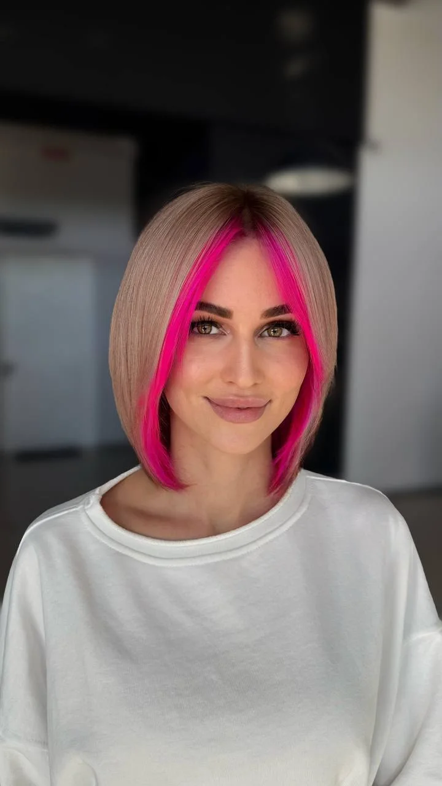
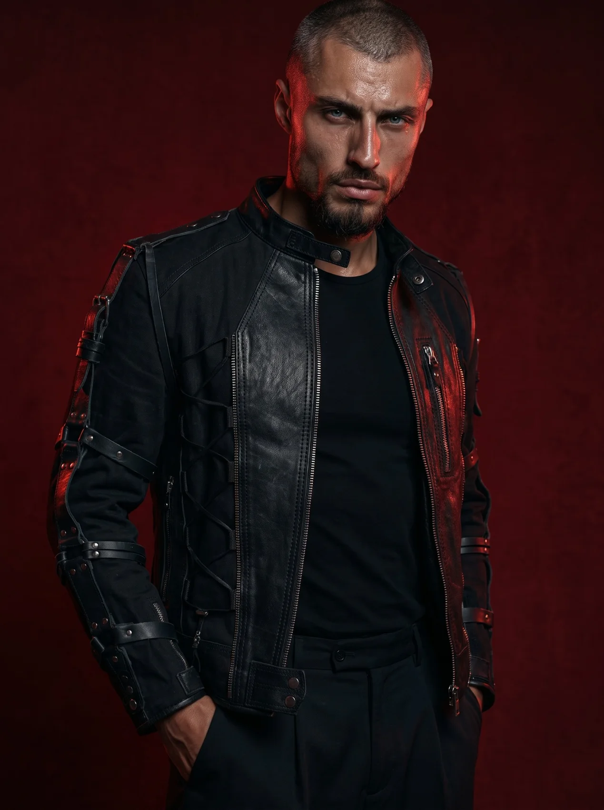
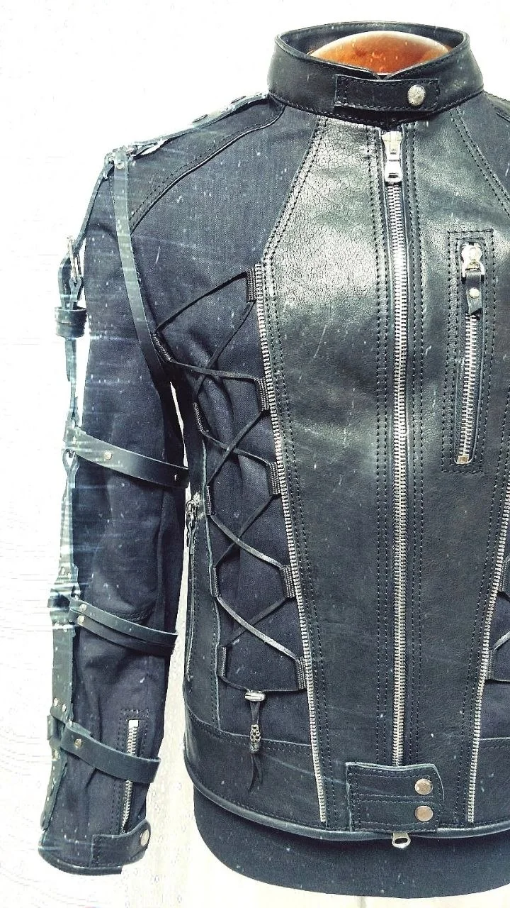
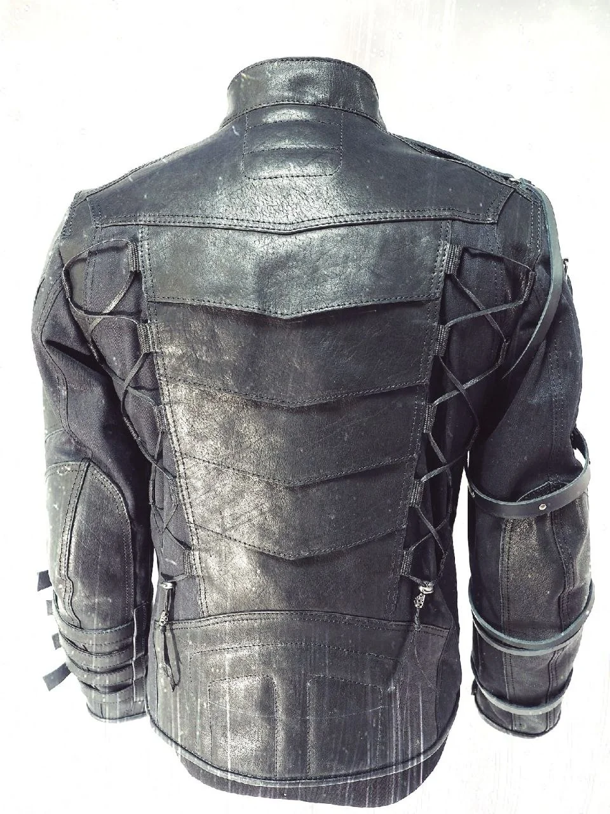
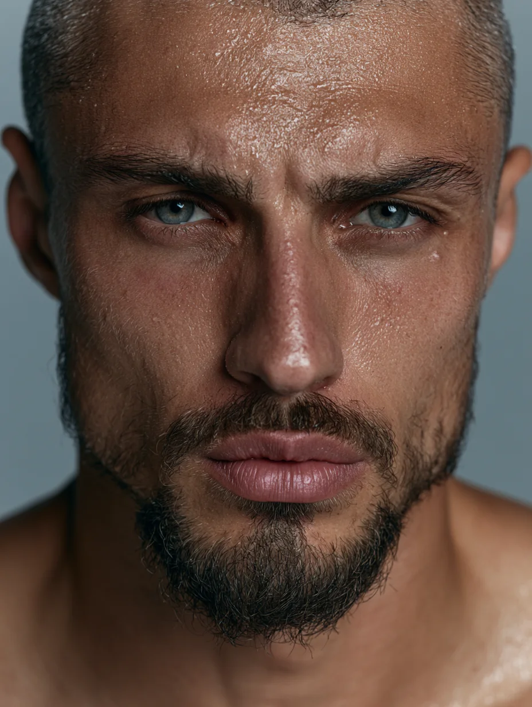
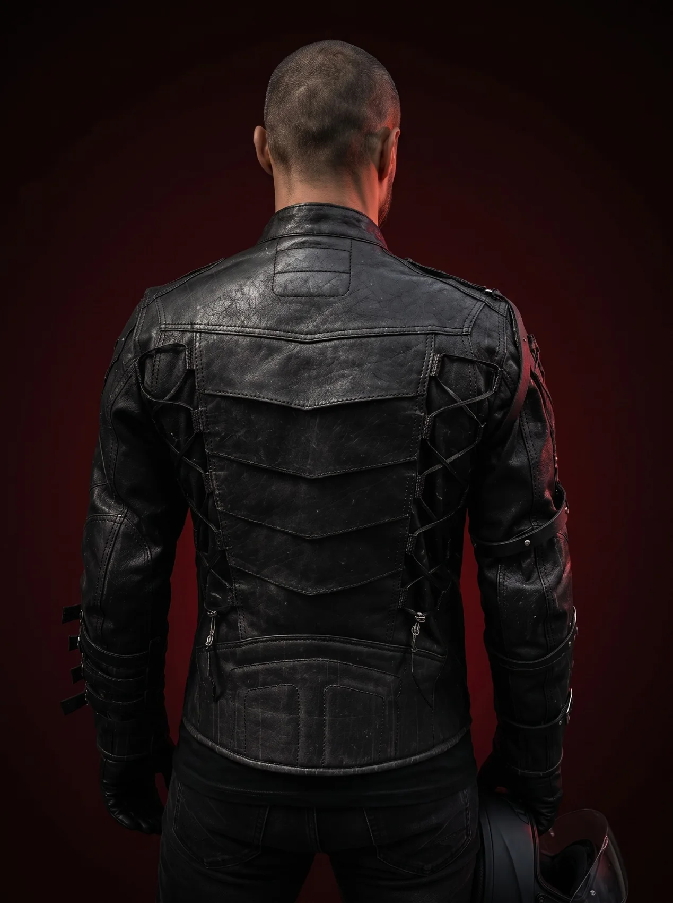

AI-фото и серия контента
От одного выразительного кадра до нескольких публикаций в общей концепции: имиджевые, предметные и рекламные изображения.
Посмотреть фото ↗Создаю AI-фото, видео и контент для брендов — от визуальной идеи до готового материала для публикации.
Смотрю на изображение не только как креатор, но и как человек с предпринимательским опытом: важно, что именно кадр рассказывает о продукте и для какой задачи он нужен. Работаю с виртуальными моделями, предметными и имиджевыми фотосессиями, AI-видео и монтажом.
СМОТРЕТЬ РАБОТЫ НАПИСАТЬ МНЕ ↗
Для брендов одежды, аксессуаров, мастерских, кафе, технологий и других проектов, которым нужен выразительный визуал.
От одного выразительного кадра до нескольких публикаций в общей концепции: имиджевые, предметные и рекламные изображения.
Посмотреть фото ↗Цифровой персонаж, перенос реальной вещи по фотографиям, фотосессия и оживление образа.
Смотреть процесс ↗Идея, сценарий, кадры, анимация и сборка ролика для бренда или контент-проекта.
Посмотреть AI-видео ↗Работаю с вашими исходниками: отбор кадров, ритм, титры, звук и формат для публикации.
Смотреть монтаж ↗Здесь можно увидеть не только итоговую картинку, но и логику производства: исходники клиента → цифровой персонаж → одежда на модели → анимация.
Бренду не обязательно начинать с полноценной студийной съёмки, чтобы визуализировать вещь на человеке. На этом примере показываю, как из фотографий настоящей куртки получается серия кадров с виртуальной моделью и короткий ролик.



Фотографии куртки от заказчика

Создание цифрового персонажа

Посадка куртки, ракурсы и детали
Движение в готовом образе
Каждый проект рассчитывается отдельно: сложность одежды, число моделей, ракурсы и анимация влияют на стоимость.
Разные жанры, единый подход к деталям. Выберите направление или посмотрите всё портфолио.
Технологии в рекламном кадре
Интерфейсы и человек
Digital-персонаж
Данные как пространство
Человек и искусственный интеллект
Cyber editorial
Human × Machine
Предметный кадр · мотосиденье
Кожа, прострочка и детали
Мотоцикл в студийной сцене
Жилет: вид со спины
Образ с жилетом
Мотоэкипировка
Кожаные аксессуары
Кожаная куртка
Мотосиденье · графичный ракурс
Harley-Davidson · фронтальный кадр
Buell · предметная съёмка
Блюдо в естественном свете
Фактура и пар
Предметный фуд-кадр
Фуд-съёмка · ракурс сверху
Напиток · предметный кадр
Три выбранные видеоработы. Нажмите «воспроизвести» прямо в карточке.
Отдельное направление: работа с уже отснятыми материалами — сюжет, темп, монтажные склейки, титры и звучание. Здесь собраны примеры разных форматов.
Помимо самостоятельных роликов, из одного съёмочного дня можно собрать несколько видео для соцсетей: процесс, знакомство с мастером, продукт крупным планом и полезное объяснение.
Стоимость зависит от количества материалов, длительности, сложности генерации и объёма монтажа. После просмотра задачи назову точную цену.
Один кадр, серия фотографий, предметная визуализация или цифровой персонаж. Сложные сцены и серия рассчитываются отдельно.
Обсудить фотосъёмку ↗Монтаж из готовых фото и видео, ритм, звук, титры и адаптация под формат публикации.
Обсудить монтаж ↗Генерация и сборка видео по сценарию. Срок и цена зависят от длительности, количества сцен и сложности анимации.
Обсудить AI-видео ↗Нужны кадры, видео и монтаж в единой концепции? Рассчитаю серию под ваш объём и задачу.